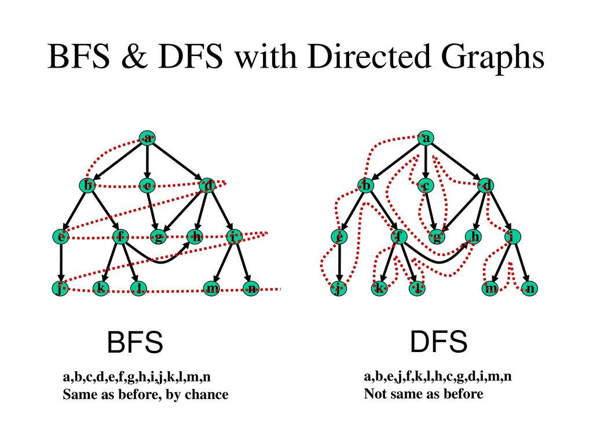

Un grafo es una estructura matemática que representa relaciones entre pares de objetos. Está compuesto por nodos (o vértices) y aristas (o bordes) que conectan estos nodos. Los grafos se utilizan para modelar relaciones en diversos contextos, como redes, mapas, o sistemas de comunicación.
Los grafos se utilizan para:
Tipos de grafos:
Ejemplo gráfico:
Los grafos se aplican en problemas reales como:
from collections import deque
def bfs(grafo, inicio):
visitados = set()
cola = deque([inicio])
while cola:
nodo = cola.popleft()
if nodo not in visitados:
print(nodo)
visitados.add(nodo)
cola.extend([v for v in grafo[nodo] if v not in visitados])
grafo = {
'A': ['B', 'C'],
'B': ['D', 'E'],
'C': ['F'],
'D': [],
'E': ['F'],
'F': []
}
bfs('A', grafo)
def dfs(grafo, nodo, visitados=None):
if visitados is None:
visitados = set()
if nodo not in visitados:
print(nodo)
visitados.add(nodo)
for vecino in grafo[nodo]:
dfs(grafo, vecino, visitados)
grafo = {
'A': ['B', 'C'],
'B': ['D', 'E'],
'C': ['F'],
'D': [],
'E': ['F'],
'F': []
}
dfs(grafo, 'A')
Estos algoritmos permiten recorrer grafos de diferentes maneras y se utilizan para resolver problemas como encontrar caminos, detectar ciclos, entre otros.
Sergio Andres Pulido
Kevin Camilo Romero
Ivonne Cruz Caballero